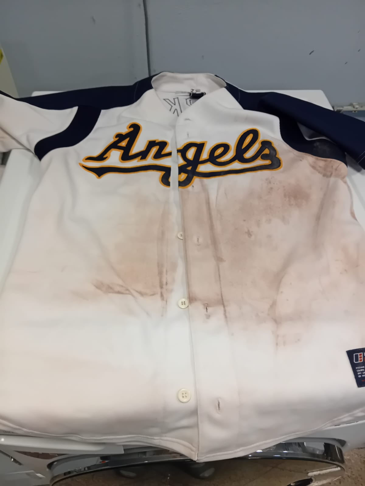
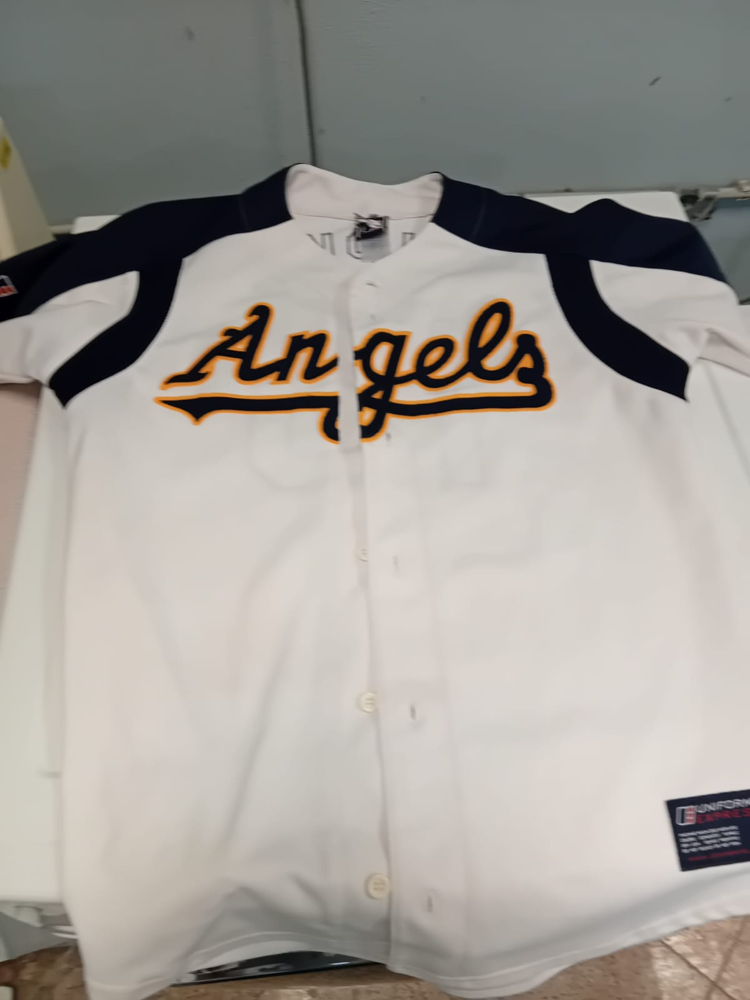
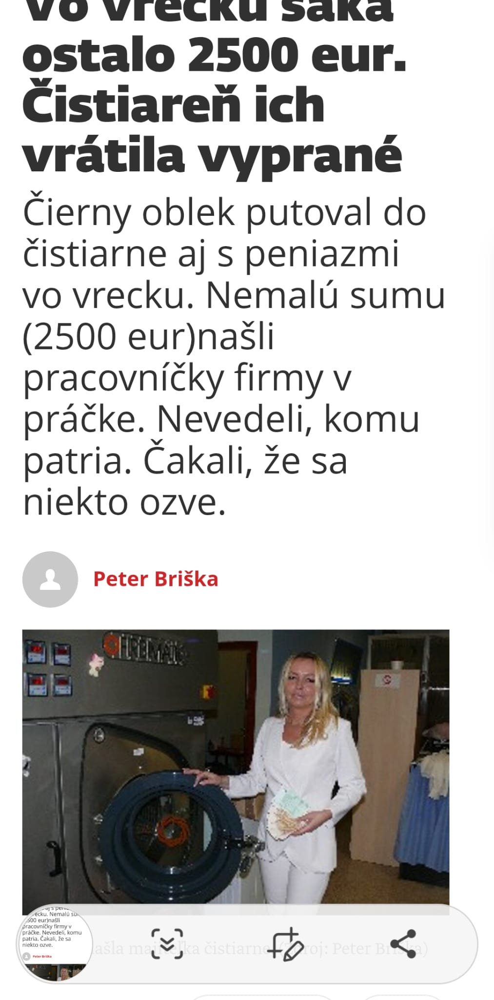

ZaujÃmavosti z našej čistiarne
✨ Pred a po čistenÃ
Pred
Po
📰 NapÃsali o nás
V miestnych novinách vyšiel článok o tom, ako sme zákaznÃkovi vrátili vyprané peniaze, ktoré zabudol vo vrecku. Čestnosť je pre nás samozrejmosťou.
